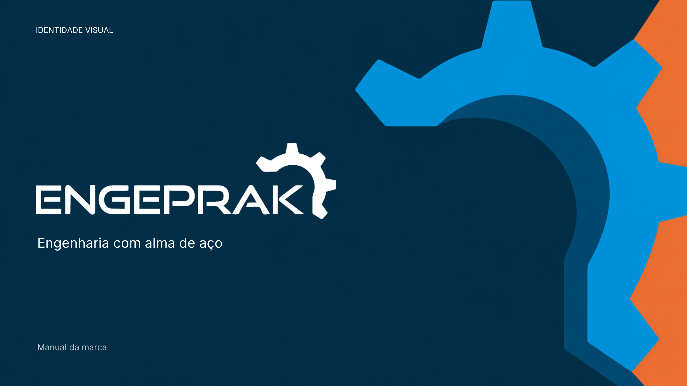

Digital
HTML único, abre no navegador, ideal para tablet no chão e apresentação comercial.
Manual digital no padrão visual Engeprak. Este arquivo é um modelo demonstrativo: a estrutura e o tom seguem um manual real de esteira; os dados são representativos para apresentação.
Um manual navegável (sidebar, busca, seções técnicas) com a identidade Engeprak: azul #0092D5, laranja #E66F39, tipografia Barlow Condensed + Inter, fundos navy e elementos de engenharia.
HTML único, abre no navegador, ideal para tablet no chão e apresentação comercial.
Baseado na lógica de uma esteira de pacote (dims, tração, operação, NR-12).
Trocar códigos, fotos e tabelas pelo equipamento real do pedido.

Valores representativos para demonstração — substituir pelos dados do projeto.
| Parâmetro | Valor | Unidade |
|---|---|---|
| Comprimento útil | 6.000 | mm |
| Largura útil | 800 | mm |
| Altura de trabalho | 900 | mm |
| Velocidade de linha | 12 – 35 | m/min |
| Capacidade estimada | 1.200 | kg |
| Massa aproximada | 1.850 | kg |
| Alimentação | 380 V / 60 Hz / 3~ | — |
Conjunto motor-redutor com proteção de acoplamento. Em operação real, o manual lista o código da peça (ex.: EP.1001.012) e o torque de serviço.
Tambor revestido, alinhamento por tensionadores laterais. Inspeção visual de desgaste a cada turno nas primeiras 40 horas.
| Código (ex.) | Descrição | Qtd | Material |
|---|---|---|---|
| EP.1001.M00 | Montagem principal | 1 | — |
| EP.1001.001 | Longarina esquerda | 1 | ASTM A36 |
| EP.1001.002 | Longarina direita | 1 | ASTM A36 |
| EP.1001.010 | Chapa de transição | 2 | Aço 1/4" |
| EP.1001.020 | Proteção NR-12 — lateral | 4 | Chapa / tela |
| COM.MOT.001 | Motor-redutor (comercial) | 1 | — |
| Intervalo | Atividade | Responsável |
|---|---|---|
| Diário | Inspeção visual de proteções e ruídos anormais | Operação |
| Semanal | Lubrificação de mancais / tensionamento | Manutenção |
| Mensal | Reaperto estrutural e checagem de alinhamento | Manutenção |
| Semestral | Revisão do conjunto de tração e painel | Técnico especializado |
Ajuste tensionadores laterais em passos curtos; confira paralelismo das longarinas.
Verificar nível de óleo, acoplamento e folga de fixação da base.
Checar sobrecarga, travamento mecânico e sensors de emergência.
Zonas de nip e transmissão fechadas; remoção só com ferramenta e LOTO.
Emergência acessível; reinício voluntário após falha.
Pictogramas de risco mecânico e elétrico nos pontos críticos.